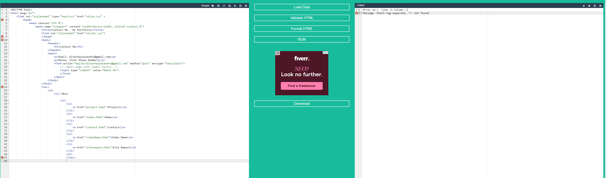

Learning HTML typically starts with getting a handle on its syntax and structure. Students usually begin by learning about HTML elements, tags, attributes and what they do. This foundational knowledge is essential, for creating structured web content. When I first started learning I watched videos to tackle the syntax. Initially HTML seemed overwhelming. As I dug deeper and began building my websites I gradually grew more comfortable with both HTML and CSS.
Challenges;
Mastering HTML can be tough for beginners due to obstacles;
Syntax; Understanding the structure and syntax of HTML elements can be daunting initially.
Memorization; Remembering the list of HTML tags and attributes takes practice.
Semantic Markup; Grasping the significance of markup and applying it effectively can be tricky, for newcomers.
Browser Compatibility; Dealing with browser compatibility issues and understanding how different browsers interpret HTML code can get complicated.
Personally I struggled with grasping and memorizing the HTML syntax. However with practice and creating my website it became easier to understand. Testing the page after coding helped me see how each piece of code functioned.
However CSS was considered user friendly to grasp and utilize due, to its instructions.
My css contained all the necessary semantic tags, mobile adaptation and animation relevant for my project to be successful
In summary;
Mastering HTML serves as an stage for individuals keen, on delving into web development and associated domains.
Despite the initial difficulties, mastering HTML provides numerous benefits and practical applications.
As the cornerstone of web development, HTML plays a significant role in shaping the digital landscape and creating accessible, user-friendly web experiences.
Through practice, hard work, dedication, and continuous learning, individuals can harness the power of HTML to build innovative and engaging websites.
On the other hand, my attempt at making a media adaptation to mobile phones was semi-successful, the menu works but the menu still remains small and in the middle instead of
being on the bottom of the page. The video works amazing using imedia from youtube. Everything works and the pages are perfectly accessible. This page contains github commits and github link
These are the code pages going through validation:
Contact.html

Index.html
Project.html
Sitereport.html
VideoDemo.html